Con casi todas las estructuras de selección necesitaremos conocer los operadores relacionales y lógicos. La descripción de éstos está en la sección operadores a modo resumen. Y en estos apartados veremos cómo los implementamos:
Una condicional en Java al igual que en otros lenguajes, nos realizará una tarea determinada si la condición se evalúa como verdadera. Es decir, se ejecutará lo que contenga el bloque de la estructura if que está delimitado por llaves. Mientras que si se evalúa como falso, no hará nada.
Veamos un ejemplo:
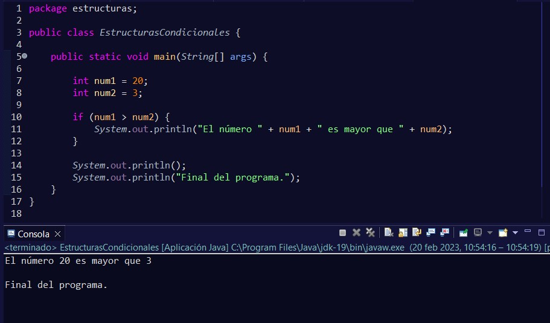Lo que está dentro del paréntesis del if valdrá true o false, en este caso ha sido true, porque se ha imprimido lo que contenía el bloque en su interior.
Para verlo más claro, voy a realizar la operación fuera de la estructura if, voy a imprimir lo que devuelve la variable y en el paréntesis voy a meter de nuevo la variable.
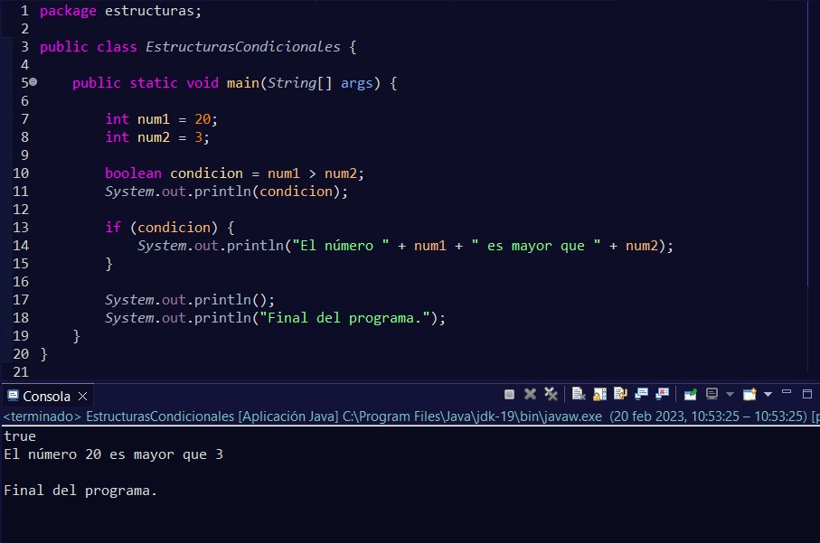Si quisiéramos que se evaluara como falso la condición en la estructura if, deberíamos colocar el signo de negación ! en los paréntesis o en la condición. Para que nos siga imprimiendo lo que contiene el if, ahora entonces deberemos de indicar si num1 no es menor que num2.
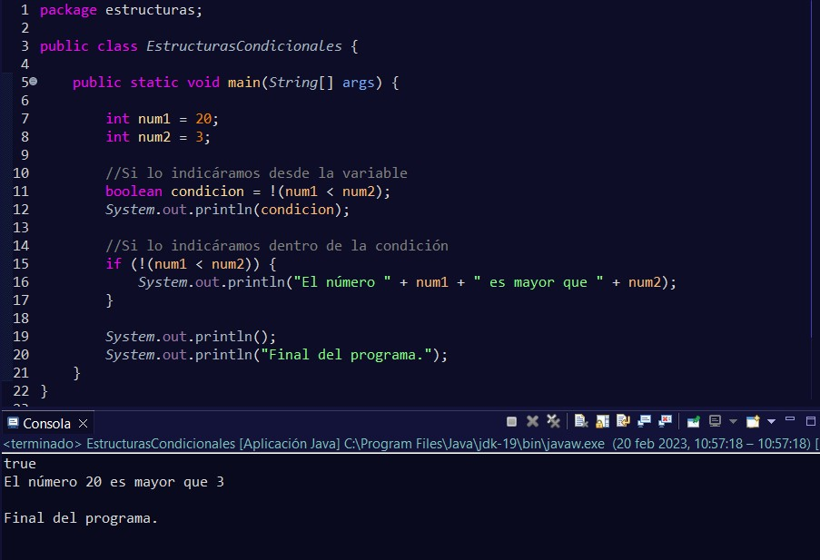Si por el contrario, el valor de la condición hubiera sido falso, lo que hay en el bloque de la estructura if, no se ejecutaría.
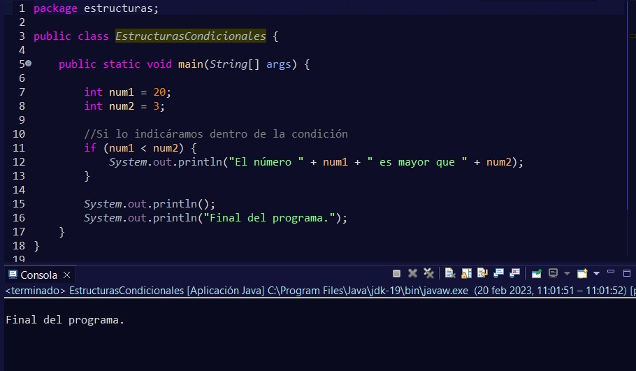Si ahora mismo quisiéramos que nuestro código hiciera algo cuando no se cumple esa condición, añadiríamos else a nuestra estructura.
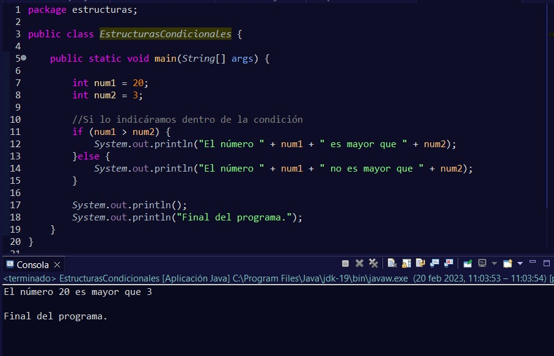En este caso he puesto en num2 el valor 30 para que se evaluara como false y así entrara en el bloque de else.
Pero a veces necesitamos que se evalúen más valores, y no bastará con evaluar solo un if. Cuando esto ocurre tenemos la sentencia else if. Veámoslo en código:
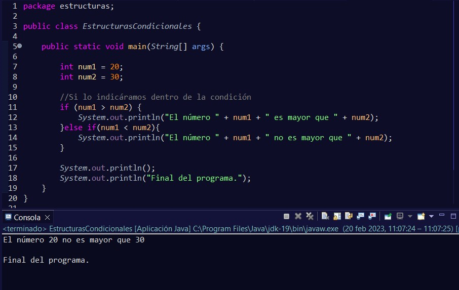Parece exactamente igual que el anterior, pero no es así. Porque lo que ocurre es que va evaluando de manera secuencial hasta que una de las condiciones se cumpla, entonces ejecutará el correspondiente bloque y saldrá de la estructura. Para verlo mejor voy a modificar la estructura anterior y voy a introducir un nuevo else if, antes que el que tenemos ahora, para ver lo que ocurre.
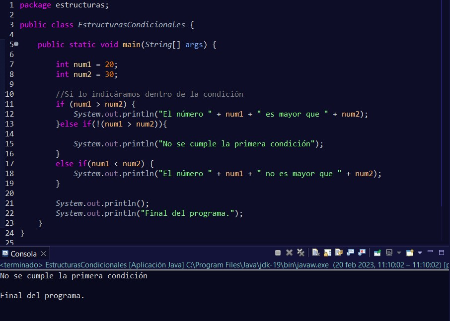En cambio, si hubiéramos usado solamente if, se hubieran evaluado todas las condiciones.
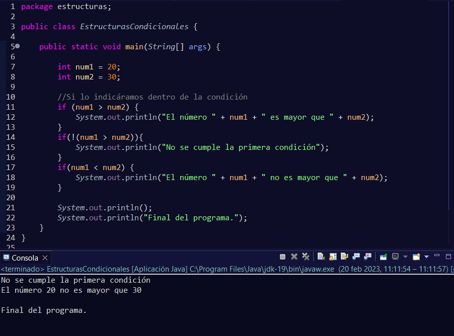Por último else if, nos permite también utilizar else de manera opcional, por si no se cumple ninguna condición que evaluemos, se ejecute lo que hay dentro de su bloque.
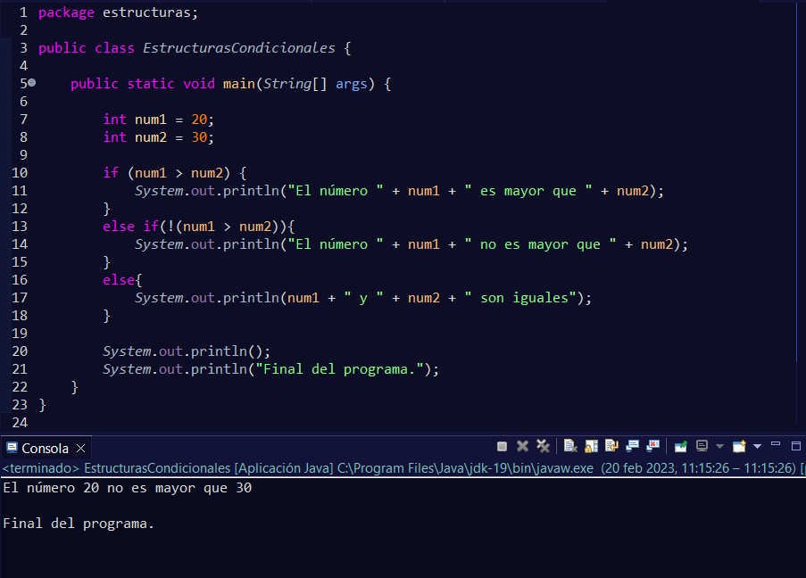También podremos tener dentro de estas estructuras más estructuras if o else if. Se dicen que están anidadas.
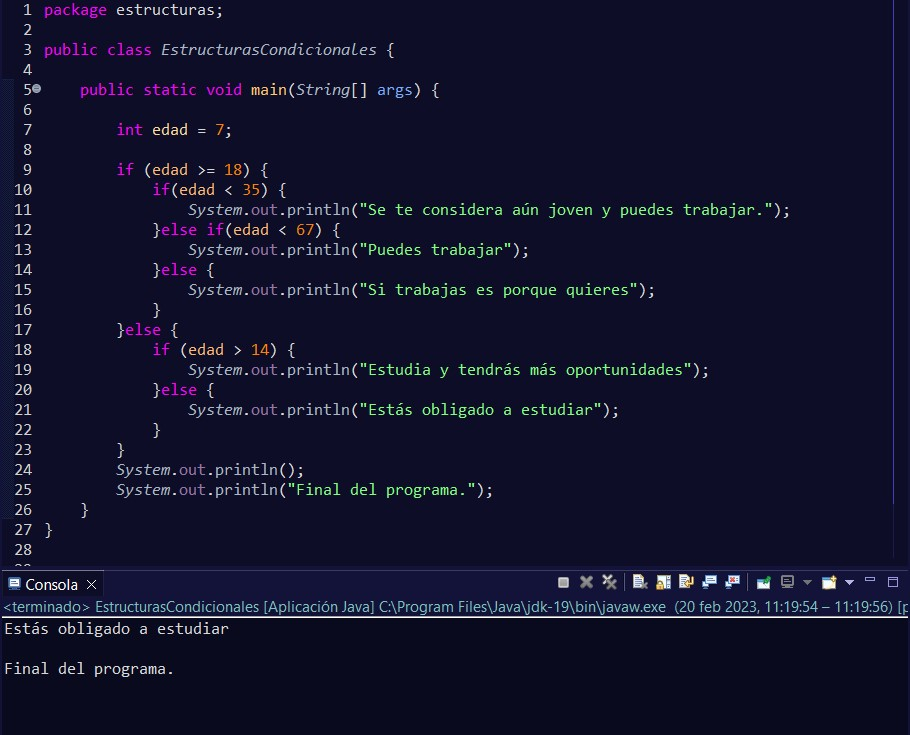Podríamos hasta incluso introducir estructuras if dentro de los if anidados que teníamos. Pero eso ya os invito a que lo probéis por vuestra cuenta.
A modo resumen, los operadores relacionales son:
| Símbolo | Descripción | Símbolo | Descripción |
|---|---|---|---|
| == | Igual | < | Menor que |
| != | Desigual | >= | Mayor o igual que |
| > | Mayor que | <= | Menor que |
Todas estas comprobaciones se han hecho evaluando una sola condición, pero a veces necesitaremos que para que se pueda ejecutar el bloque de un if se necesiten varias condiciones a la vez y realizar muchas estructuras anidadas nos haría un código muy complejo. Para esto, tenemos los operadores lógicos:
| Símbolo | Descripción | Símbolo | Descripción |
|---|---|---|---|
| & | And lógico | | | Or lógico |
| && | And lógico perezoso | || | Or lógico perezoso |
| ^ | Xor lógico | ! | Opuesto |
Para ver cómo funciona, como anteriormente vimos que se podría encapsular el resultado en una variable, y por no hacer el código muy largo para aplicar el concepto, me limitaré a explicarlo mediante variables de tipo de dato booleano los resultados.
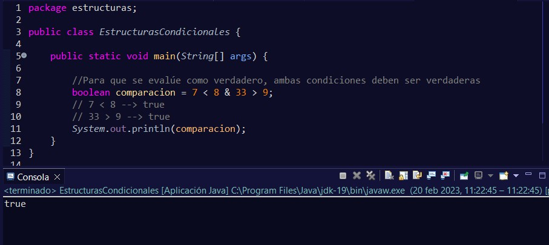En este primer ejemplo, como vemos, se deben evaluar las dos comparaciones y ambas deben ser verdaderas para que la condición salga verdadera.
también podríamos haber pasado variables para comparar la condición:
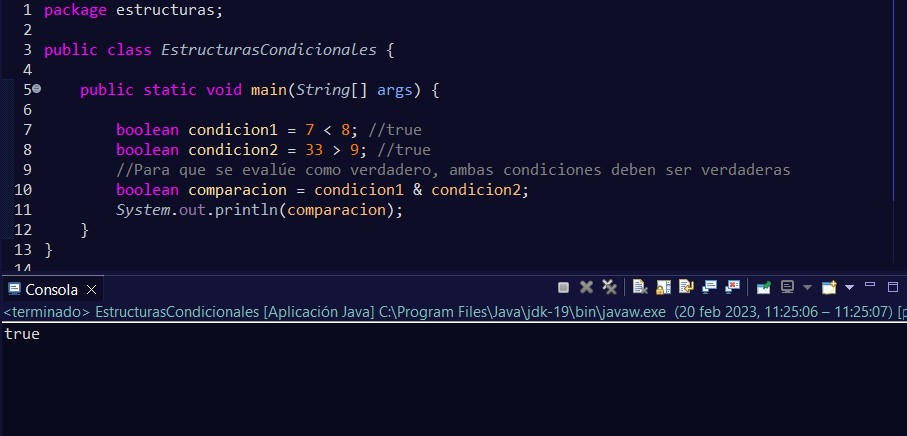Y como también se puede comparar directamente el literal booleano, para ver los resultados y analizar todos los operadores y lo que ocurre, escribiremos directamente éstos sin crear previamente la evaluación:
Para que se muestre true, ambos operadores deben ser true, en caso contrario, devolverá false.
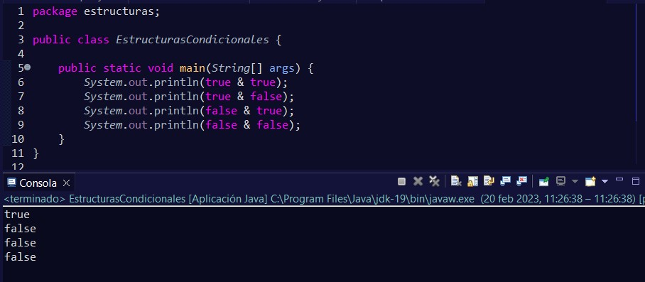Para que se muestre true, al menos uno de los dos operadores debe ser true, en caso contrario, devolverá false.
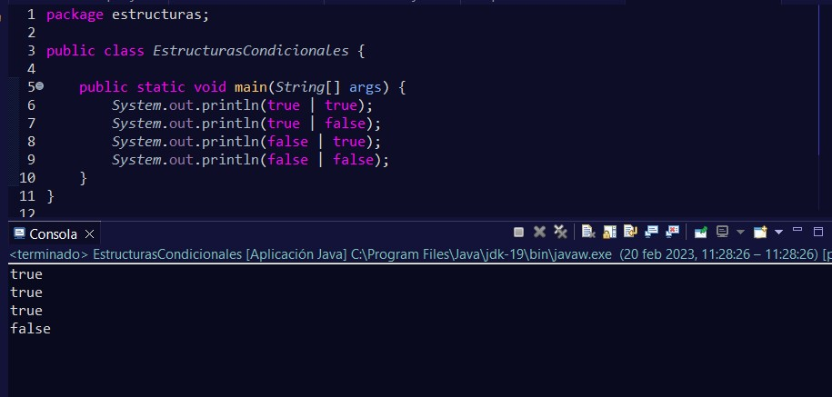Es igual que &, pero si la primera evaluación es false, la segunda condición no se evaluará. Es por esto, que en la imagen que se muestra a continuación, el IDE nos está marcando una advertencia indicando que no se evaluará los booleanos donde inicialmente estaban en false. Y es de ahí que se les asigne el nombre de perezosos.
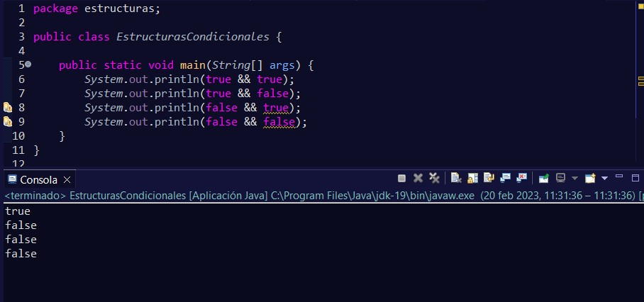Funciona de manera similar al &&, pero aquí, el segundo no se evaluará si el primero es true.
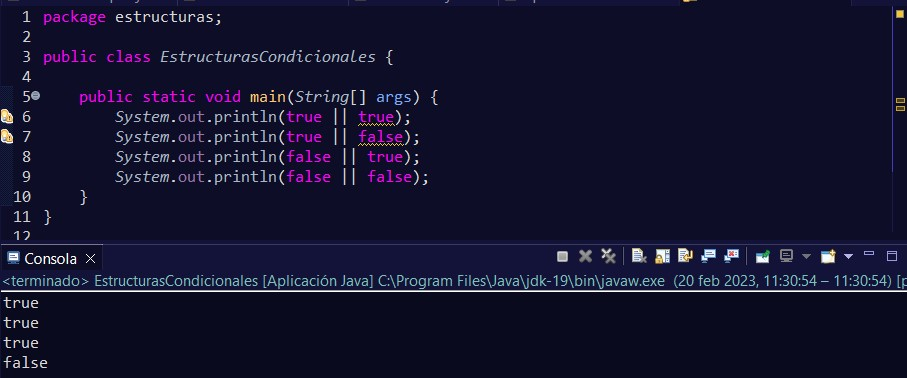Para que se evalúe como true, ambos booleanos deben ser contrarios
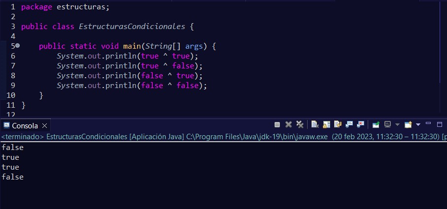Lo que hace este operador, es transformar el booleano a su contrario.
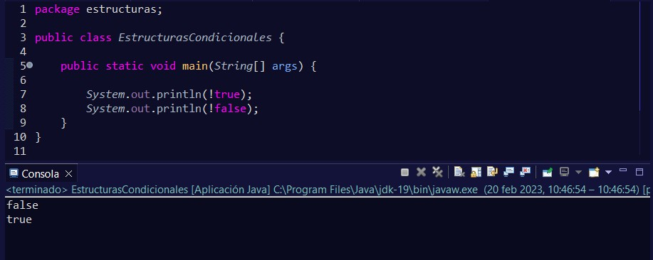También es llamado operador ternario. Este operador evaluará una condición, si ésta aparece como true, se escogerá la instrucción que hay después de la interrogación y antes de los dos puntos, en caso contrario, la que va después de los dos puntos.
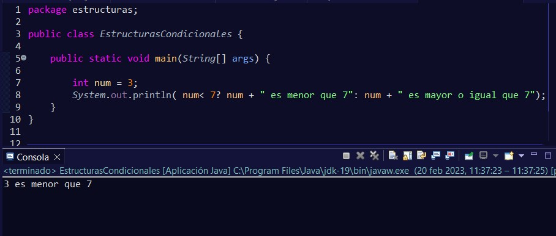Estamos acostumbrados a ver las instrucciones para imprimir texto, pero se pueden utilizar para otras instrucciones, como para devolver un entero.
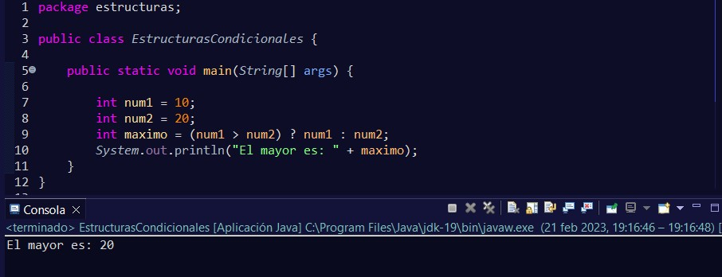Podríamos invocar funciones:
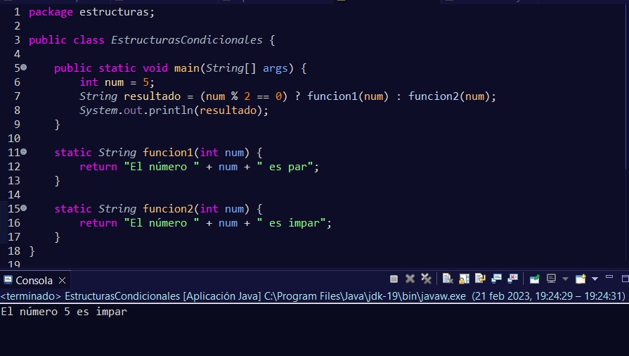No te preocupes si no sabes todavía cómo realizar una función, lo que te importa ahora mismo es ver que no está limitado el operador a una cadena de texto y que existen más posibilidades. Hasta incluso, en uno usar una operación y en otro un String.
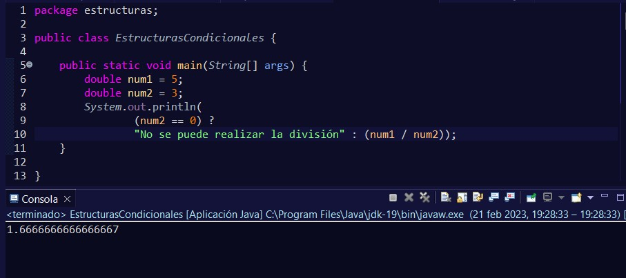Otro uso que podríamos hacer, es comprobar su un usuario tiene un nombre. Si lo tiene devolverá el nombre, en caso contrario, devolverá invitado.
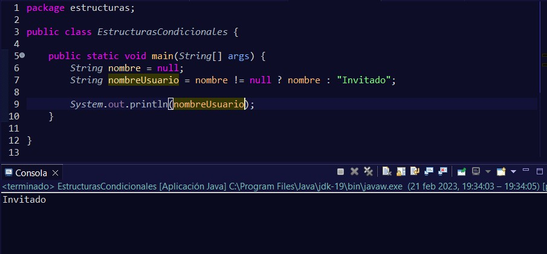Con switch podremos comparar varios valores, sin ser necesariamente booleanos. Es decir, podremos comparar texto, números, booleanos, caracteres..., y aquel que coincida, ejecutará el valor que tiene en su interior.
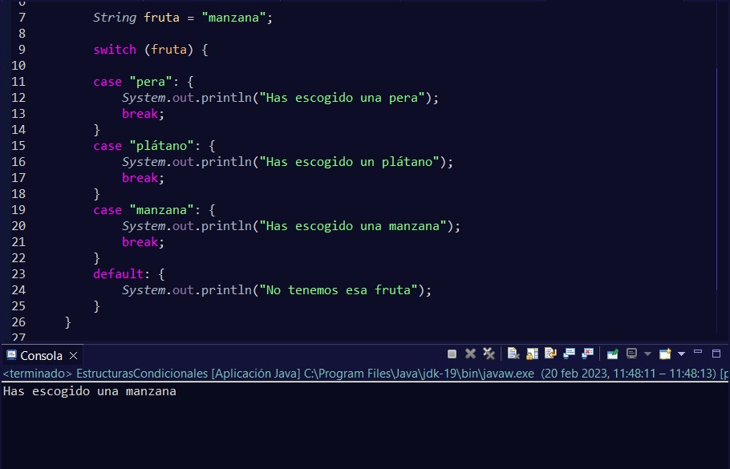Entre paréntesis se introduce lo que queremos comparar. En cada case, se mostrará la opción que se compara. En cada bloque se terminará con break, ya que si no se hace, se ejecutarán los siguientes case aunque no se cumplan hasta encontrar el siguiente break.
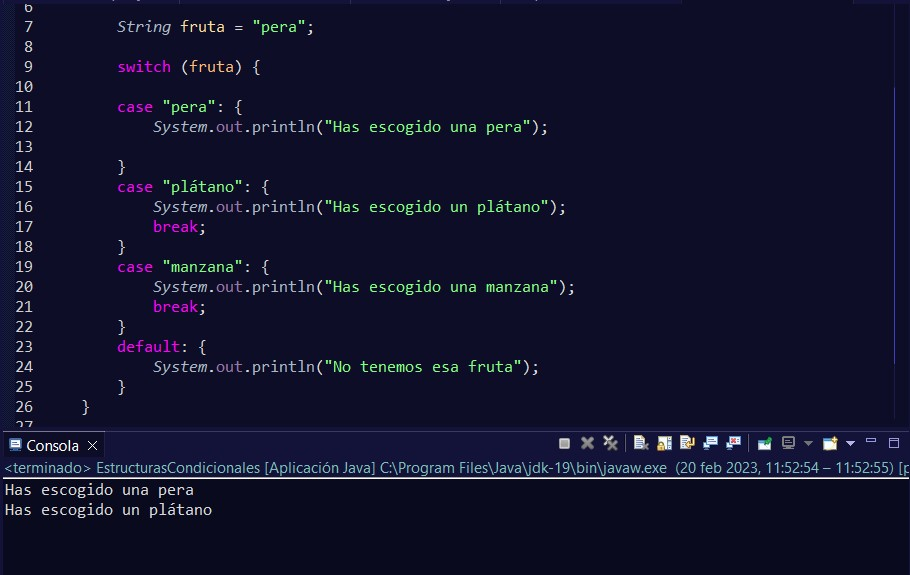Por último indicar que el default es opcional, pero es útil cuando no existe ninguna opción.
Cuando solo existe una sentencia en una condicional if, se pueden suprimir los paréntesis. Aquí muestro dos ejemplos de cómo podríamos representar el código.
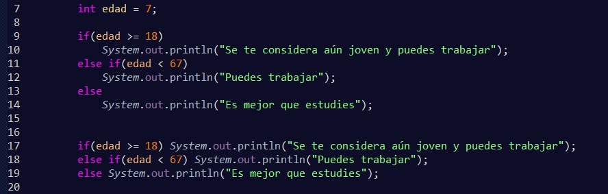No se considera buena práctica porque puede llegar a generar confusión del código, por lo que se recomienda utilizar las llaves aunque solo exista una sentencia para una mejor comprensión.
Cuando todos nuestros case terminen en break, podremos utilizar lambda para expresar nuestro switch de la siguiente manera acortando líneas de código y haciéndolo más comprensible:
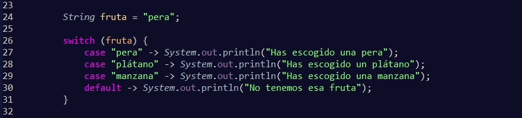Esta sintaxis, al contrario que la anterior, sí que es más aconsejable de usar que la que se vio anteriormente.
si tuviéramos más de una sentencia en un case, se colocarían las llaves.
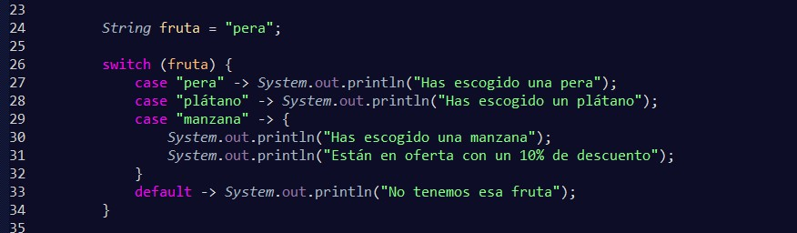